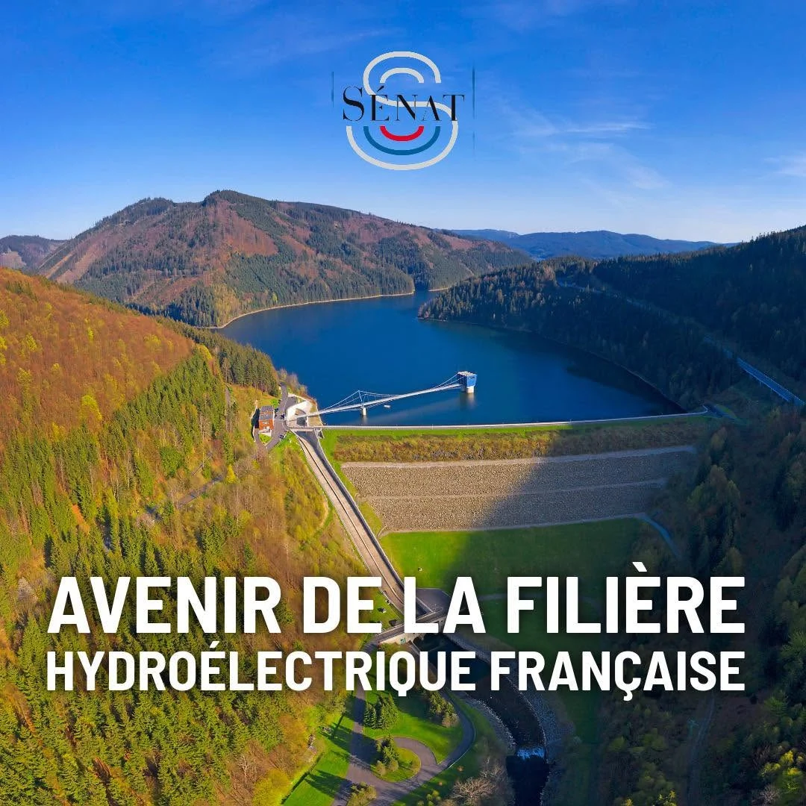
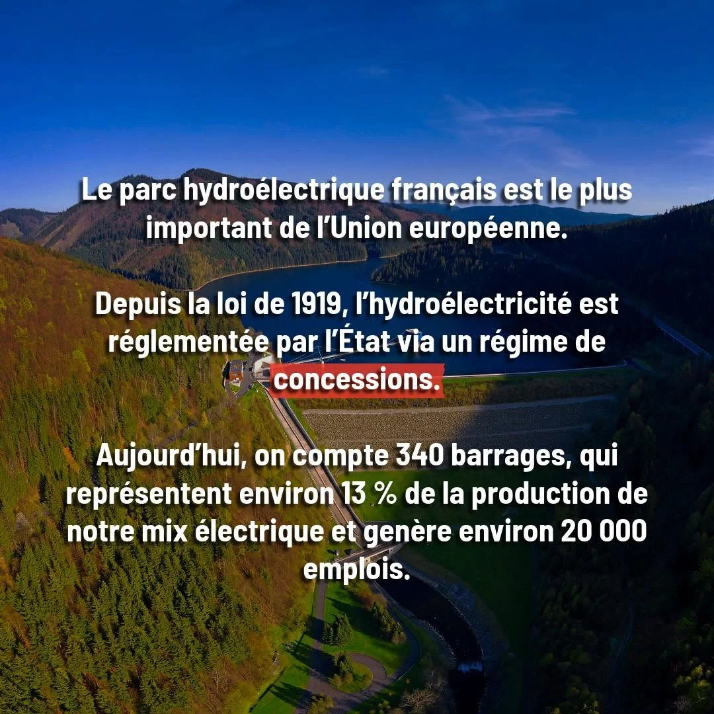
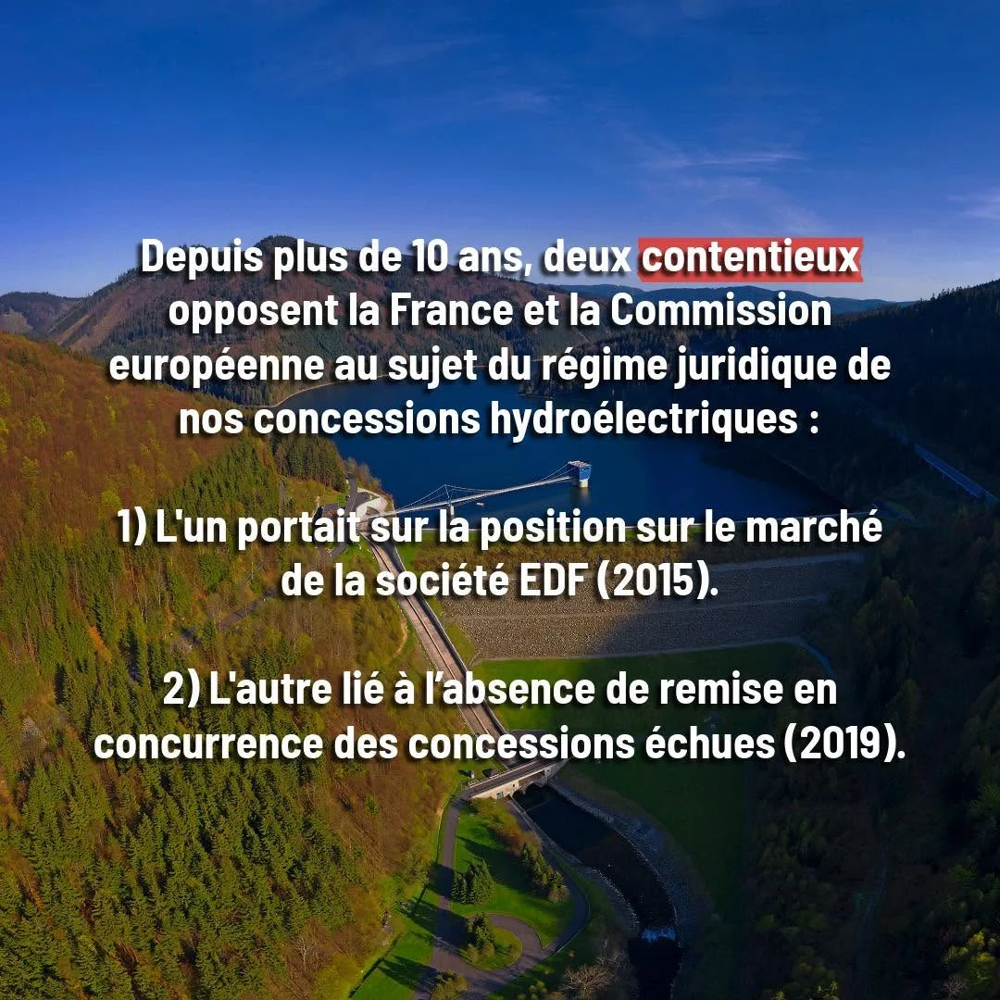
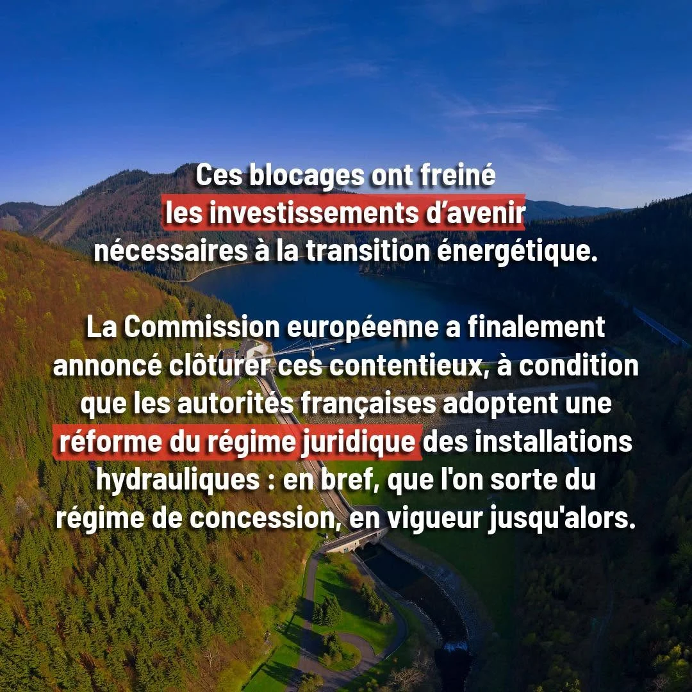
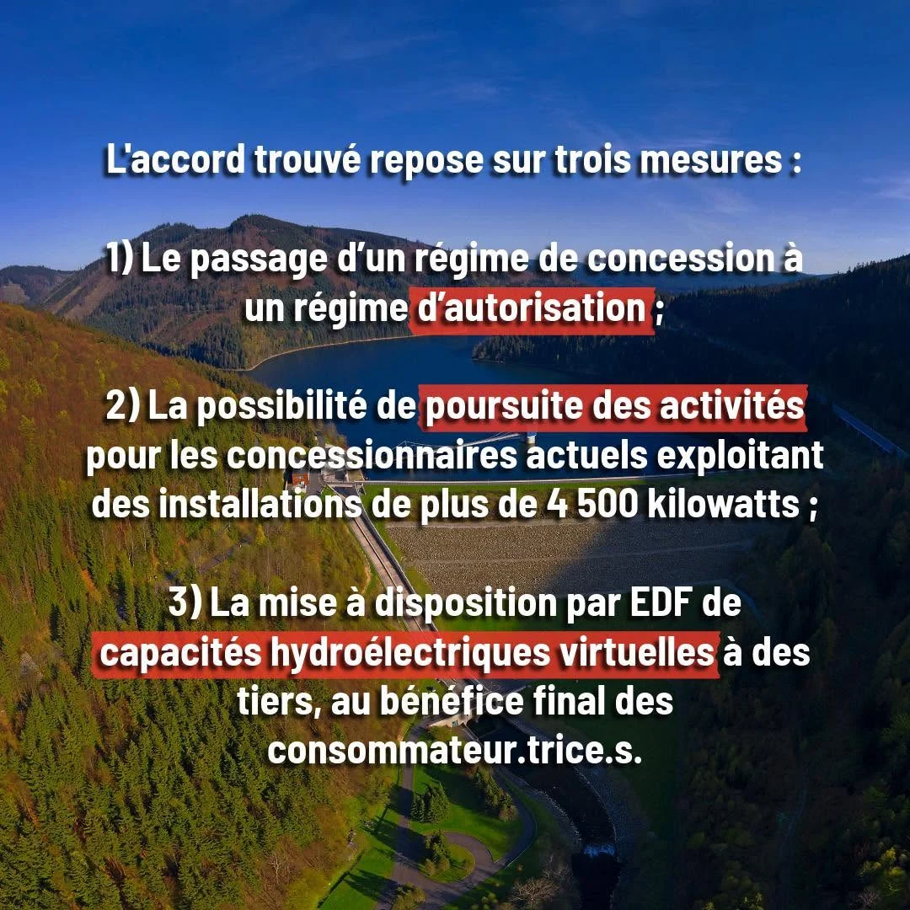
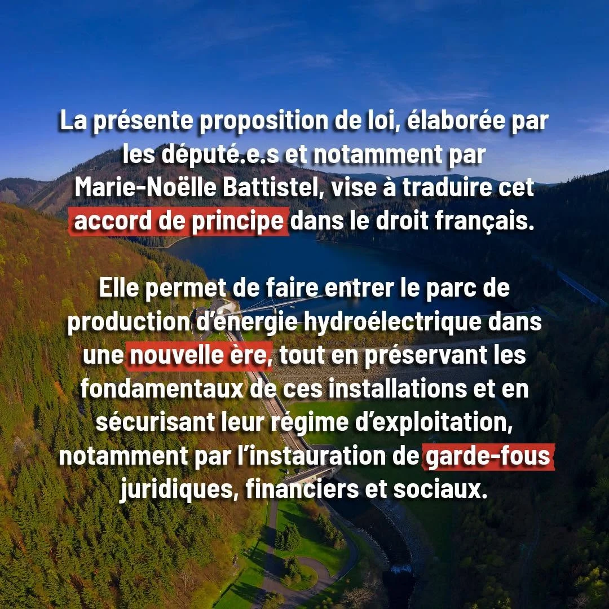
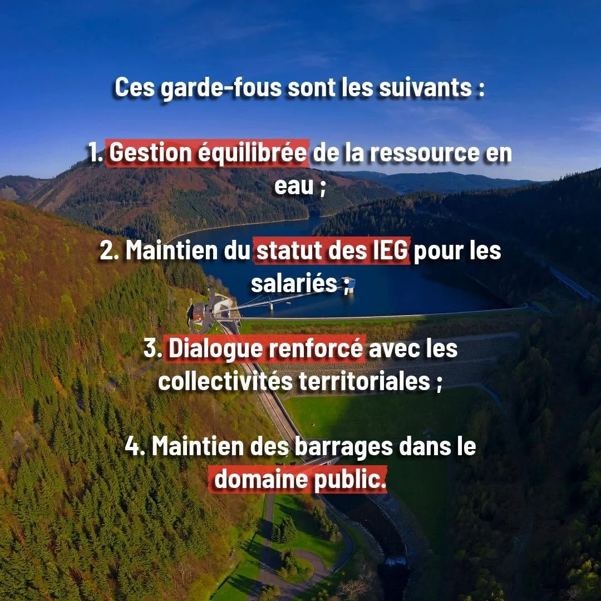
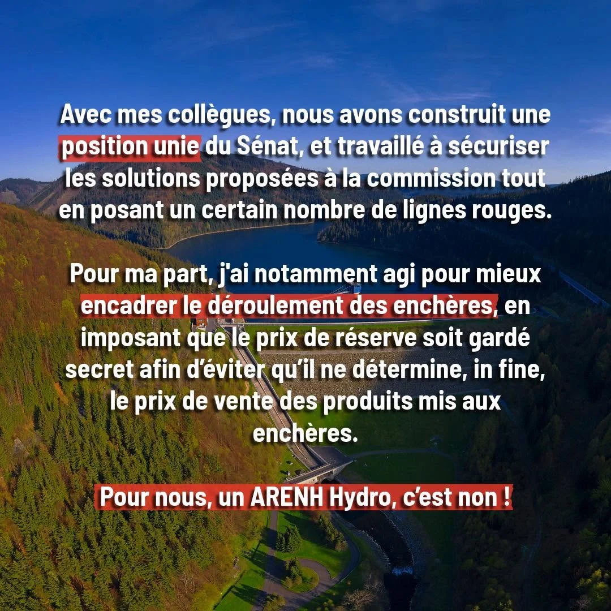
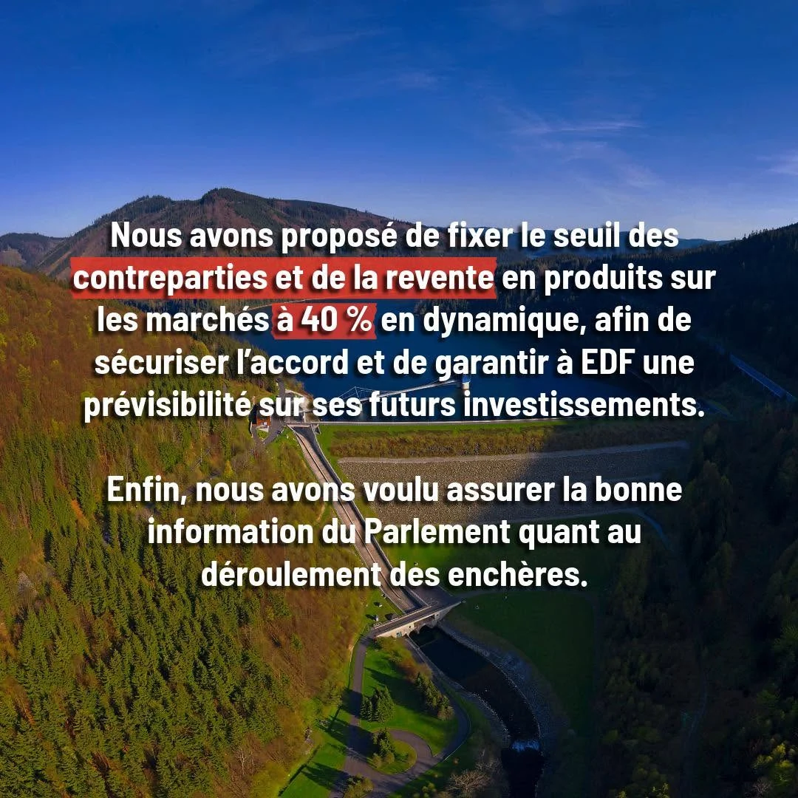
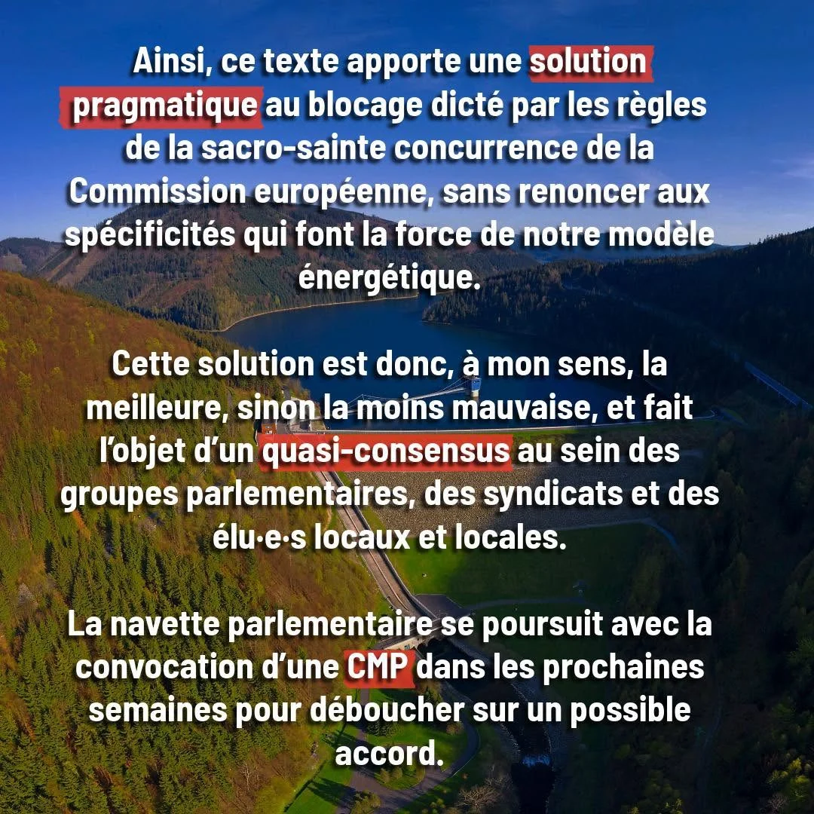

Publication relayée par le PCF 79
Fabien Gay revient sur le vote du texte sur l’hydroélectricité
Date de mise à jour indiquée par Facebook · 20 avril 2026
Texte de la publication · Fabien Gay
⚡️ Hier, nous avons adopté la proposition de loi pour relancer les investissements dans l’hydroélectricité.
Première fois pour ma part que j’étais co-rapporteur d’un texte et avec mes 3 autres collègues, nous avons trouvé, je l’espère, un compromis utile sur cette question énergétique.










Sources
Fabien Gay · publication relayée par le PCF 79 · bibliothèque Facebook · AR-0002-FB-00812
À lire aussi · PLF : Barnier sacrifie aussi le climat ! · Le lien d’origine